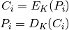
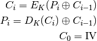
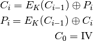
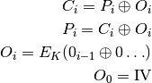
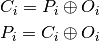

Discussions¶
This section provides in-depth knowledge of topics important in the context of the library.
Block cipher mode of operation¶
Block ciphers can be used in different modes of operation. The mode of operation can be set by passing one of the constants to the cipher object. Different modes of operation may require to pass extra arguments to the constructor.
PEP-272 requires libraries to provide at least the most common modes:
ECB, CBC, CFB, OFB and CTR, all of those are supported
by this library.
Each mode of operation is different and has different requirements.
Electronic Code Book Mode (ECB)¶
The ECB mode of operation is the simplest one - each plaintext block is independently encrypted. The resulting problem is that the same plaintext leads to the same ciphertext, every time they occur. This means ECB mode is not semantically secure.
Plain- / ciphertexts must be multiple of blocksize in length.
The formulae for the ECB mode are:


ECB encryption

ECB decryption
Attacks against ECB mode¶
Because all plaintext blocks are encrypted independently, an encryption of the same block results in the same ciphertext block each time.
This means by having multiple ciphertexts in can be concluded whether the correspondent plaintexts are the same or not.
The multiple repetition of plaintext blocks may result in visible repetitions in the ciphertext, e.g. in images.

Plain Tux image

Encrypted Tux image in ECB mode
Cipher Block Chaining Mode (CBC)¶
To solve the problems of the ECB mode, a plaintext block is xored to the previous ciphertext block. For the very “first” ciphertext an initialization vector (IV) is used. The IV can be considered public information.
Plain- / ciphertexts must be multiple of blocksize in length.
Having an incorrect block or IV will result in an incorrect decryption of the direct adjectant block, but the remaining blocks will remain intact.
The formulae for en- and decryption are:


CBC encryption

CBC decryption
Attacks against CBC mode¶
A one-bit change to the ciphertext causes complete corruption of the corresponding block of plaintext, and the inversion of the corresponding bit in the next block while leaving the rest iof the blocks intact. This can lead to padding oracle attacks such as POODLE (it is the consequence solely of the choice of CBC mode but other design choices, too).
Watermarking attacks are possible with predictable IVs.
Cipher Feedback Mode (CFB)¶
The CFB mode of operation makes a stream cipher out of the block cipher. The
block size of the cipher is reduced to segment_size.
Plain- and ciphertext must be a multiple of segment_size in length.
The formulae describing CFB mode are:


CFB encryption

CFB decryption
Output Feedback (OFB)¶
OFB mode creates a stream cipher by xoring the plain text with a keystream generated by encrypting a stream of null bytes in CBC mode. Encryption and decryption are the same, data of arbitrary length can be processed.
The formulae describing OFB mode of operation are:


OFB encryption

OFB decryption
Counter mode of operation¶
CTR mode creates a stream cipher by xoring the plain text with a keystream generated by encrypting counter. Encryption and decryption are the same, data of arbitrary length can be processed.
CTR can be described with those formulae:

where are the return values of the counter.

CTR encryption

CTR decryption
Speed¶
As most of this library is written in pure python the speed is not that great, compared to libraries written in C or similar, the slow speed may allow timing attacks.
Benchmarks showed this library’s speed 0.02 - 0.045 of PyCrypto’s, where cipher logic is written in C.
On the upside, this makes usage easier: Subclassing is made drastically easier. An optimized Xor function will automatically be used if a C compiler available.